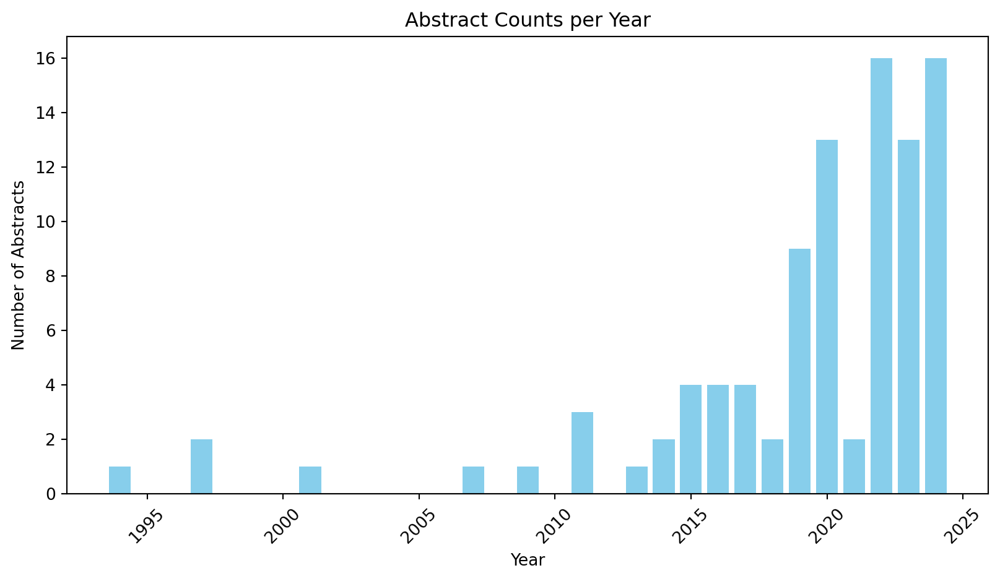

from openai import OpenAI
from local_settings import OPENAI_KEY # Assumes you have a local_settings.py file in your folder with your OpenAI key
# Initialize the OpenAI client
client = OpenAI(api_key=OPENAI_KEY) # I need a new API_keyLoading the data
import pandas as pd
import plotly.express as px
from itables import show
import numpy as np
rw_data = pd.read_excel("livestock-detection-counting-and-classification_2025-02-06_10_54_12_export.xlsx", sheet_name="Sheet1", header=0)There are 100 articles in the dataset with 24 columns, for the analysis: columns doi, first_page, last_page, etc can be remove since they do not contain necessary information at this stage
clean_data = rw_data.drop(
columns=[
"doi",
"first_page",
"last_page",
"conference_series",
"volume",
"number",
"journal",
"url",
]
)
yearVcount = clean_data.groupby(["year", "publication_type"]).count()["abstract"]
fig_line = px.line(
clean_data.groupby("year").count()["abstract"],
title="Abstracts trends from 1994 on Livestock Detection",
labels={"value": "Abstract Count", "year": "Year"},
)
fig_line.show()
yearVcount = yearVcount.to_frame().reset_index()
fig_bar = px.bar(
yearVcount,
x="year",
y="abstract",
color="publication_type",
title="Abstracts trends from 1994 on Livestock Detection",
labels={"abstract": "Abstract Count", "year": "Year", "publication_type": "Type"},
# nbins=40,
)
fig_bar.show()
# clean_data["year"].sort_values(ascending=False).head(20)
# def llm_chat(message):
# response = client.chat.completions.create(
# model="gpt-4o-mini", messages=[{"role": "user", "content": message}]
# )
# return response.choices[0].message.content
# # Test the function here
# llm_chat("What is Python (the language) named after?")# import pandas as pd
import matplotlib.pyplot as plt
# Load the data
file_path = (
"livestock-detection-counting-and-classification_2025-02-06_10_54_12_export.xlsx"
)
df = pd.read_excel(file_path, sheet_name="Sheet1").drop(
columns=[
"doi",
"first_page",
"last_page",
"conference_series",
"volume",
"number",
"journal",
"url",
]
).drop_duplicates(subset='abstract')
# Convert 'year' column to numeric
if "year" in df.columns:
df["year"] = pd.to_numeric(df["year"], errors="coerce")
# Plot Abstract Counts vs. Year using matplotlib
abstract_counts = df.groupby("year").size()
plt.figure(figsize=(10, 5))
plt.bar(abstract_counts.index, abstract_counts.values, color="skyblue")
plt.xlabel("Year")
plt.ylabel("Number of Abstracts")
plt.title("Abstract Counts per Year")
plt.xticks(rotation=45)
plt.show()
# Slice Data for Repeated Authors
if "authors" in df.columns:
authors_series = (
df["authors"].dropna().str.split(",")
) # Assuming authors are separated by ','
authors_flat = [author.strip() for authors in authors_series for author in authors]
author_counts = pd.Series(authors_flat).value_counts()
repeated_authors = author_counts[author_counts > 1].index.tolist()
repeated_authors_df = df[
df["authors"].str.contains("|".join(repeated_authors), na=False)
]
print("Repeated Authors Data:")
print(repeated_authors_df[["authors", "year", "Methods Used"]])
# Slice Data for Latest Patents
if "publication_type" in df.columns and "year" in df.columns:
patents_df = df[df["publication_type"].str.contains("patent", case=False, na=False)]
latest_patents_df = patents_df.sort_values(by="year", ascending=False).drop(columns=['Literature Survey', 'Limitations', 'Future Research', 'Research Gap'])
print("Latest Patents Data:")
print(latest_patents_df[["title", "year", "authors"]].head())
print("Oldest Patents Data:")
print(latest_patents_df[["title", "year", "authors"]].tail())
Repeated Authors Data:
authors year \
4 Chao Zuo, Liang Han, Pin Tao, Xiang lei Meng 2020.0
6 Wangli Hao, Li Zhang, S H Xu, Meng Han, Fuzhon... 2024.0
9 Liang Han, Pin Tao, Ralph R. Martin 2019.0
11 Zishun Zhou 2022.0
18 Su Rui 2020.0
22 Xingyu Chen, Xiaodong Ye, Miao Li, Zhixian Son... 2023.0
23 Xingyu Chen, Xiaodong Ye, Miao Li, Hualong Li,... 2022.0
32 Zishun Zhou NaN
36 Wangli Hao, Li Zhang, Meng Han, Kai Zhang, Fuz... 2023.0
65 Su Rui 2019.0
81 Jasper A. J. Eikelboom, Johan Wind, Eline van ... 2019.0
94 Li Minghua 2016.0
96 Li Minghua 2016.0
Methods Used
4 - The paper proposes an improved livestock de...
6 - The paper introduces a novel model called Y...
9 - The paper presents a livestock detection al...
11 - The paper proposes an advanced improved YOL...
18 - The method involves acquiring an original i...
22 - The paper proposes an object detection meth...
23 - The paper proposes a Light Attention YOLO m...
32 - The paper proposes an advanced improved YOL...
36 - The paper proposes a novel model called YOL...
65 - The method involves acquiring an original i...
81 - The study evaluated the performance of a mu...
94 - The automatic counting and weighing equipme...
96 - The livestock automatic counting weighing a...
Latest Patents Data:
title year authors
18 Livestock quantity identification method and a... 2020.0 Su Rui
98 Animal count identification method, device, me... 2020.0 Wang Huaiqing
48 Smart farm livestock management system based o... 2019.0 Choi Seung Kyu
75 A video surveillance apparatus for detecting a... 2019.0 Joo Young Hoon
65 livestock number identification method and device 2019.0 Su Rui
Oldest Patents Data:
title year \
97 Animal detection system 2007.0
78 Automated system for counting livestock 2001.0
84 Animal detection sensor and animal number mana... 1997.0
89 Livestock identification apparatus 1997.0
95 Automatic system for separating, counting and ... 1994.0
authors
97 Sudo Tomonori, Fujii Hiroyuki, Oda Toshinori, ...
78 Jerry Starr
84 Hashimoto Kazuhiko, Yoshiike Nobuyuki
89 Lars H. Andersson, Joseph S. Sheen, William E....
95 Jean-Louis Hubert from collections import Counter
# Drop NaN values in the "Methods Used" column
methods_text = df["Methods Used"].dropna().str.lower()
# Tokenize and count common method-related words/phrases
method_words = []
for text in methods_text:
words = text.split() # Simple split, can be improved with NLP techniques
method_words.extend(words)
# Get the most common method words (filtering out generic terms manually may be needed)
common_methods = Counter(method_words).most_common(50) # Checking top words first
# Extract meaningful method names (refining this further using domain knowledge)
common_method_names = [method for method, count in common_methods if len(method) > 3][
:10
]
# Filter the dataset for rows that contain these methods
filtered_df = df[
df["Methods Used"].str.contains("|".join(common_method_names), case=False, na=False)
]
# Select relevant columns
result_df = filtered_df[["Methods Used", "Results"]].head(10)
# Display the extracted DataFrame
show(result_df)| Methods Used | Results | |
|---|---|---|
|
Loading ITables v2.2.2 from the internet...
(need help?) |
df_type_filter = df.query('publication_type == ["Proceedings Article", "Journal Article"]')
# Define phrases to search for
keywords = ["deep learning", "yolo", "cnn", 'convolutional neural network', 'mrvifnet', 'ldr', 'rfid']
def find_keywords(text, keywords):
"""Finds all matching phrases or keywords in a given text and returns them as a comma-separated string."""
if pd.isna(text):
return None
text_lower = text.lower()
found = [kw for kw in keywords if kw in text_lower]
return ", ".join(found) if found else None
# Apply function to the "Methods Used" column
df_type_filter["Found Methods"] = df_type_filter["Methods Used"].apply(lambda x: find_keywords(x, keywords))
# Display the first few rows to verify the results
show(df_type_filter[["Methods Used", "Found Methods"]])
px.histogram(df_type_filter, y= 'Found Methods')C:\Users\James\AppData\Local\Temp\ipykernel_5948\3146927497.py:16: SettingWithCopyWarning:
A value is trying to be set on a copy of a slice from a DataFrame.
Try using .loc[row_indexer,col_indexer] = value instead
See the caveats in the documentation: https://pandas.pydata.org/pandas-docs/stable/user_guide/indexing.html#returning-a-view-versus-a-copy
| Methods Used | Found Methods | |
|---|---|---|
|
Loading ITables v2.2.2 from the internet...
(need help?) |